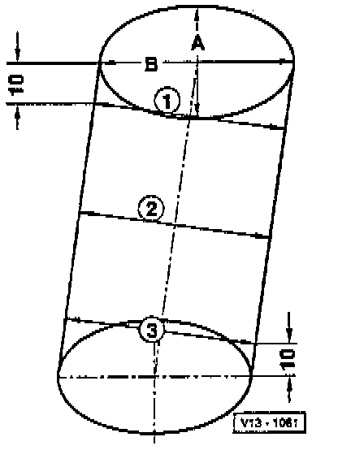

Cylinder Block Assembly: Testing and Inspection
Cylinder Bore, Checking

Special tools, testers and auxiliary items required
• Internal dial gauge 50 to 100 mm
Test Sequence
Measure diagonally at 3 positions transversely - A - and longitudinally - B -.
Deviation from nominal size: max. 0.08 mm.
• Cylinder bore measurement may not be performed when the cylinder block is mounted on engine and transmission holder (VAS 6095), false measurements are possible.